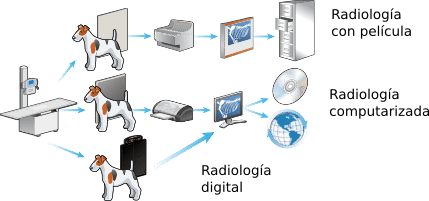

Puede resultar complicado entender la jerga de los Rayos X con tecnología digital: “CR, DR, CsI, Bucky, DQE, silicio amorfo, PACS, DICOM, ruido del quantum".
Pero lo importante es como la tecnología digital puede beneficiar su consulta. Para ello podemos describir las ventajas de los tres sistemas más frecuentes de radiografía
Es el proceso que se ha usado por más de un siglo. Consiste en exponer una hoja de película sensible a un haz de radiación. El material debe ser procesado con reactivos químicos especiales. Esto requiere tiempo, adquisición constante de película, químicos y espacio para almacenar el material resultante, el cual es de díficil manipulación.
Esta técnica sustituye la película con un chases que tienen una pantalla de fósforo. Se expone igual que una película convencional, lo que crea una imagen latente, la que se captura en un escáner para transformar la información análoga en una imagen dígital que se puede visualizar en un equipo de computo. La pantalla puede ser usada indefinidamente, lo que además de eliminar los químicos, reduce los costos por adquisición de película. El proceso en general es mucho más rápido que con la película, y ofrece una manera accesible de pasar a un proceso digital.
Tambien conocido como radiográfia digital directa, ya que la imagen es capturada en un dispositivo completamente digital que envia la información de manera instantanea a su equipo de visualización. El tiempo se reduce más aumenta la productividad y equiere menos espacio.